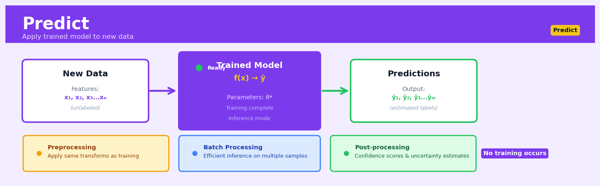

Predict#


The biggest mistake I see is teams forgetting that prediction requires identical preprocessing to training—if you normalized your training data, you must apply those exact same normalization parameters to new data, not recompute them. Another gotcha is neglecting to track model versioning in production; when predictions drift, you need to know exactly which model version and preprocessing pipeline generated each output. Always log your prediction inputs alongside outputs with timestamps so you can debug data distribution shifts later.
The 60-Second Version#
What it does: Predict takes a trained machine learning model and applies it to new data to generate forecasts, classifications, or scores that inform business decisions.
When to use it: Use Predict when you have a trained model and need to answer “what will happen next” or “which category does this belong to” for new customers, transactions, or situations.
What you get back: You receive a prediction for each record—a number (sales forecast, probability score) or category (will churn, creditworthy)—that you can immediately act on through automated rules or human review.
Difficulty |
Easy |
Typical runtime |
Milliseconds for single predictions; seconds for 100K rows |
What you bring |
A trained model and new data with the same structure the model was trained on |
What you get |
Predictions, probabilities, or scores for each record |
Heuristix bucket |
Predict — Machine Learning & Forecasting |
A prediction is only as good as the model behind it—always monitor prediction quality and retrain models when patterns change.
Learning Objectives#
After reading this chapter, a business user will be able to:
Identify whether your business problem requires batch prediction (scoring historical data, periodic forecasts) or real-time inference (instant decisions, live recommendations) and articulate the implications of each approach to technical teams.
Interpret prediction outputs including confidence intervals, probability scores, and forecast ranges to communicate uncertainty and reliability to stakeholders who will act on these predictions.
Evaluate whether prediction quality is sufficient for your use case by comparing model performance metrics against business costs of false positives, false negatives, and the value of correct predictions.
After reading this chapter, a data scientist will be able to:
Implement prediction pipelines that handle data preprocessing, feature engineering, and model serving while managing common edge cases like missing values, out-of-range inputs, and data drift.
Configure prediction parameters including batch size, confidence thresholds, and ensemble strategies by analyzing the trade-offs between prediction speed, resource consumption, and output quality.
Diagnose prediction failures by monitoring performance metrics over time, detecting distribution shifts between training and production data, and implementing feedback loops to identify when models require retraining.
Overview#
Predict is the fundamental operation of applying a trained machine learning model to new, unseen data to generate predictions, forecasts, or classifications. It represents the deployment phase of the machine learning lifecycle, where a model that has learned patterns from historical data produces actionable outputs for decision-making. Predict encompasses both batch prediction (scoring many records at once) and real-time inference, and applies across all supervised learning paradigms including regression, classification, time series forecasting, and survival analysis.
When to Use This#
Use this when you have a trained model and new data requiring predictions — the model has been validated on holdout data and is ready for production deployment against fresh observations.
Use this when business decisions depend on forecasted values — such as predicting next month’s sales, customer churn probability, or equipment failure likelihood to trigger operational responses.
Use this when you need to score a large batch of records efficiently — for example, scoring your entire customer database for propensity-to-buy before a marketing campaign.
Use this when implementing automated decision systems — where model outputs directly feed downstream processes like credit approval, fraud alerts, or inventory reordering.
Use this when monitoring model performance over time — generating predictions on new data allows comparison against eventual ground truth to detect model drift.
Use this when conducting what-if scenario analysis — applying the model to hypothetical inputs to understand how changes in features would affect predicted outcomes.
Do NOT use this when the model has not been properly validated — deploying an untested model can lead to systematically poor decisions; always validate on holdout data first.
Do NOT use this when the new data distribution differs substantially from training data — predictions extrapolating far beyond the training domain are unreliable and may be misleading.
Do NOT use this when feature engineering pipelines are inconsistent — the same transformations applied during training must be applied identically during prediction, or results will be incorrect.
Do NOT use this when prediction uncertainty is critical but not quantified — point predictions alone may be insufficient for high-stakes decisions; consider prediction intervals or probabilistic outputs.
Questions This Answers#
Customer Behavior & Revenue#
Will this customer renew their contract in the next 90 days, or should we intervene now?
Which of these 50,000 leads are most likely to convert so we can prioritize our sales team’s time?
How much revenue can we expect from each customer segment next quarter?
Is this transaction fraudulent, and should we block it before processing?
What’s the lifetime value of customers acquired through our new digital channel versus traditional sales?
Operational Planning & Resource Allocation#
How many customer support tickets should we staff for next month based on our product launch schedule?
Which inventory items will run out in the next two weeks, and how much should we reorder?
What will our cash flow look like over the next six months given current payment patterns?
Should we approve this loan application, and what’s the probability of default?
Risk Management & Quality Control#
Which machines in our production line are likely to fail in the next 30 days so we can schedule preventive maintenance?
What’s the probability this patient will be readmitted within 90 days of discharge?
Which employees are at highest risk of leaving in the next year, and what retention incentives should we offer?
Will this insurance claim cost us more than $50,000, and does it need special handling?
Which customers are likely to churn this quarter, and what’s the ROI of a retention campaign targeting them?
How It Works#
Imagine you’ve spent months teaching your teenage daughter to estimate grocery bills while shopping. You walked through hundreds of trips together, showing her how pasta, milk, and chicken typically add up. She learned that produce averages \(3 per item, boxed goods run \)5, and meat costs about \(12 per pound. Now you send her to the store alone with a list: 2 vegetables, 3 boxes of pasta, 1.5 pounds of chicken. She doesn't need you there—she applies the patterns she learned to this new list and estimates \)39 before even leaving home. That’s exactly what prediction does: it takes a model trained on past examples and applies those learned patterns to new data it’s never seen before.
TRAINED MODEL NEW DATA (unseen)
┌─────────────────────┐ ┌─────────────────────┐
│ Learned Patterns │ │ Customer #8472 │
│ ───────────────── │ │ ───────────────── │
│ Age: +2% per year │ │ Age: 34 │
│ Income: +5% per 10K│ → │ Income: $65,000 │
│ Owns Home: +15% │ │ Owns Home: Yes │
│ Credit Score: ... │ │ Credit Score: 720 │
└─────────────────────┘ └─────────────────────┘
↓ ↓
[ PREDICT APPLIES
THE PATTERNS ]
↓
┌──────────────────────┐
│ PREDICTION │
│ ───────────────── │
│ Will Buy Product: │
│ 78% likely │
└──────────────────────┘
Step 1: Load the trained model. The system retrieves your previously trained model from storage—this could be a decision tree, neural network, or any other algorithm you’ve built. The model contains all the patterns and weights learned during training, frozen in time like a recipe written down after years of cooking experiments.
Step 2: Receive the new data. Fresh data arrives that the model has never encountered before. This might be a single new customer record, a batch of 10,000 transactions to score overnight, or a real-time stream of sensor readings. The data must have the same structure (same columns, same types) that the model was trained on.
Step 3: Preprocess the inputs. The system applies the exact same transformations used during training—scaling numbers to similar ranges, converting categories to numeric codes, handling any missing values. If you normalized age by dividing by 100 during training, you must do the identical operation now. This ensures the new data speaks the same “language” the model learned.
Step 4: Feed data through the model. Each record flows through the model’s learned structure. A decision tree routes it down branches based on learned thresholds. A neural network multiplies inputs by trained weights and passes them through layers. A regression model applies its learned coefficients. The model mechanically applies its internal rules without any new learning.
Step 5: Generate the output. The model produces a prediction: a category label for classification (“will churn”), a number for regression (predicted revenue: $2,847), or probabilities for each possible outcome (60% low risk, 30% medium, 10% high). This output becomes your actionable insight.
The key insight: Prediction works because patterns that held in historical data reliably repeat in new situations—the model becomes a reusable pattern-matching engine that scales human judgment to millions of decisions instantly.
The Intuition#
Think of a trained machine learning model as a highly experienced appraiser who has spent years studying house sales in a particular city. During their training period, they examined thousands of transactions, learning which features matter (square footage, location, condition) and how those features combine to determine price. When you bring this appraiser a new house they have never seen, they apply their accumulated knowledge to estimate its value. The predict operation is precisely this: taking the encoded knowledge from the training phase and applying it to generate estimates for new cases.
The power of prediction lies in generalisation. A good model does not memorise the training examples; it extracts the underlying patterns that govern the relationship between inputs and outputs. When we predict, we are betting that these patterns hold for data the model has never encountered. This is why the match between training data and prediction data matters so much—if the appraiser learned prices in a booming urban market, their estimates for rural farmland may be wildly inaccurate, not because they learned poorly, but because they learned a different problem.
Prediction also involves a fundamental asymmetry: during training, we have both inputs and outputs and can measure how well the model fits; during prediction, we have only inputs and must trust that our learned mapping remains valid. This trust is earned through rigorous validation practices and maintained through ongoing monitoring. The predict operation itself is computationally straightforward—it is merely function evaluation—but its business impact depends entirely on the quality of the preceding model development process.
The Mathematics#
Formal Problem Setup#
Let \(f: \mathcal{X} \rightarrow \mathcal{Y}\) denote a trained model that maps from the feature space \(\mathcal{X} \subseteq \mathbb{R}^p\) to the target space \(\mathcal{Y}\). During training, we observed data \(\mathcal{D}_{\text{train}} = \{(\mathbf{x}_i, y_i)\}_{i=1}^{n}\) and used it to estimate the model parameters \(\hat{\boldsymbol{\theta}}\).
The prediction task is: given a new observation \(\mathbf{x}^* \in \mathcal{X}\) with unknown target \(y^*\), compute the predicted value:
For batch prediction over \(m\) new observations \(\mathbf{X}^* \in \mathbb{R}^{m \times p}\), we compute:
Regression Prediction#
For linear regression with \(f(\mathbf{x}; \boldsymbol{\theta}) = \mathbf{x}^\top \boldsymbol{\beta}\), prediction is:
where \(\hat{\boldsymbol{\beta}} = (\mathbf{X}^\top \mathbf{X})^{-1} \mathbf{X}^\top \mathbf{y}\) was estimated during training.
The prediction variance, assuming homoscedastic errors with variance \(\sigma^2\), is:
This yields the prediction interval:
The additional 1 under the square root accounts for irreducible error variance in the new observation.
Classification Prediction#
For binary classification, models typically output a probability estimate:
The class prediction is obtained by thresholding:
where \(\tau \in [0,1]\) is the classification threshold (commonly 0.5, but often tuned based on business costs).
For logistic regression specifically:
For multi-class classification with \(K\) classes, the softmax function produces a probability vector:
The predicted class is:
Ensemble Predictions#
For ensemble methods combining \(B\) base learners \(\{f_b\}_{b=1}^{B}\):
Bagging (averaging):
Boosting (weighted sum):
Random Forest classification (majority vote):
Time Series Forecasting#
For autoregressive models predicting \(h\) steps ahead from time \(T\):
Multi-step forecasts require recursive or direct strategies:
Recursive: Use \(\hat{y}_{T+1}\) as input to predict \(\hat{y}_{T+2}\), etc.
Direct: Train separate models for each horizon \(h\).
Assumptions for Valid Prediction#
Stationarity of the data-generating process: The relationship \(P(Y | \mathbf{X})\) learned during training remains valid at prediction time.
Covariate support: New observations \(\mathbf{x}^*\) lie within or near the support of the training distribution—extrapolation is unreliable.
Feature consistency: The same feature engineering and preprocessing transformations are applied identically.
Independence (for uncertainty quantification): New observations are independent of training data for valid confidence intervals.
Edge Cases and Degenerate Conditions#
Missing features: If \(\mathbf{x}^*\) has missing values, imputation or model-native handling is required.
Novel categories: Categorical features with levels unseen during training require fallback strategies.
Extreme values: Predictions for inputs far from training data may be unreliable; some models (e.g., tree ensembles) produce constant extrapolations.
Understanding the Mathematics#
Linear Prediction Formula#
The equation:
Read it aloud:
“The predicted value equals the base amount plus the first feature’s weight times its value, plus the second feature’s weight times its value, and so on for all features.”
What each symbol means:
\(\hat{y}\) — the predicted output (pronounced “y-hat”)
\(\beta_0\) — the baseline or intercept (prediction when all features are zero)
\(\beta_1, \beta_2, \ldots, \beta_p\) — weights showing how much each feature matters
\(x_1, x_2, \ldots, x_p\) — the input features (the data we know about)
\(p\) — the total number of features
A concrete numerical example:
Predicting house price based on size and age. If \(\beta_0 = 80{,}000\), \(\beta_1 = 120\) (per square foot), \(\beta_2 = -2{,}000\) (per year old), house size \(x_1 = 1{,}500\) sqft, and age \(x_2 = 10\) years:
The predicted price is $240,000.
Why this equation matters:
This formula converts everything your model learned during training into an actual prediction—without it, your trained model is useless for making decisions.
Logistic Prediction Formula#
The equation:
Read it aloud:
“The probability that the outcome is true given the inputs equals one divided by one plus e raised to the negative of the linear combination.”
What each symbol means:
\(P(y=1|x)\) — probability the outcome is positive (class 1) given the inputs
\(e\) — Euler’s number (approximately 2.718), the base of natural logarithms
All other symbols same as linear prediction
A concrete numerical example:
Predicting loan default probability. Customer has credit score \(x_1 = 680\), income \(x_2 = 55{,}000\). Trained weights: \(\beta_0 = 2.5\), \(\beta_1 = -0.005\), \(\beta_2 = -0.00003\).
First calculate the linear part: $\(2.5 + (-0.005)(680) + (-0.00003)(55{,}000) = 2.5 - 3.4 - 1.65 = -2.55\)$
Then apply the logistic function: $\(P(\text{default}=1) = \frac{1}{1 + e^{-(-2.55)}} = \frac{1}{1 + e^{2.55}} = \frac{1}{1 + 12.81} = \frac{1}{13.81} = 0.072\)$
This customer has a 7.2% default probability.
Why this equation matters:
The logistic function forces predictions to stay between 0 and 1, giving us valid probabilities instead of nonsensical values like -30% or 140%.
Prediction Confidence Interval#
The equation:
Read it aloud:
“The prediction plus-or-minus a confidence multiplier times the standard error of the prediction.”
What each symbol means:
\(\hat{y}\) — the point prediction (our best single guess)
\(z\) — confidence multiplier (1.96 for 95% confidence)
\(\text{SE}(\hat{y})\) — standard error measuring prediction uncertainty
\(\pm\) — creates a range around the prediction
A concrete numerical example:
A model predicts quarterly sales of \(\hat{y} = 450{,}000\) with standard error \(\text{SE} = 35{,}000\). For 95% confidence:
Lower bound: \(381{,}400\)
Upper bound: \(518{,}600\)
We’re 95% confident actual sales will fall between \(381,400 and \)518,600.
Why this equation matters:
Point predictions alone are dangerously overconfident—the interval tells decision-makers the realistic range of outcomes they should plan for.
The Big Picture#
The mathematics of prediction transforms learned patterns into concrete outputs decision-makers can act on. Linear combinations provide the foundation because they’re computationally fast and interpretable—you can see exactly how each input contributes to the output. For classification, we wrap these linear combinations in functions like logistic that map arbitrary numbers to valid probabilities. Confidence intervals acknowledge that predictions aren’t certainties; they quantify our uncertainty so stakeholders can make risk-aware decisions. At its core, prediction math is simply weighted addition: every feature gets multiplied by how important it is, then everything gets summed to produce the answer.
Python Implementation#
import numpy as np
import pandas as pd
from sklearn.model_selection import train_test_split
from sklearn.ensemble import RandomForestClassifier, GradientBoostingRegressor
from sklearn.linear_model import LogisticRegression
from sklearn.preprocessing import StandardScaler
from sklearn.pipeline import Pipeline
from sklearn.datasets import make_classification, make_regression
import warnings
warnings.filterwarnings('ignore')
# =============================================================================
# Example 1: Binary Classification Prediction
# =============================================================================
print("=" * 60)
print("EXAMPLE 1: Binary Classification Prediction")
print("=" * 60)
# Generate synthetic customer churn dataset
X_clf, y_clf = make_classification(
n_samples=1000,
n_features=10,
n_informative=6,
n_redundant=2,
random_state=42
)
# Create meaningful feature names
feature_names = ['tenure_months', 'monthly_charges', 'total_charges',
'num_products', 'support_tickets', 'login_frequency',
'contract_length', 'payment_delays', 'feature_8', 'feature_9']
X_clf_df = pd.DataFrame(X_clf, columns=feature_names)
# Split into training and new data for prediction
X_train, X_new, y_train, y_new = train_test_split(
X_clf_df, y_clf, test_size=0.2, random_state=42
)
# Train a classification model
clf_pipeline = Pipeline([
('scaler', StandardScaler()),
('classifier', LogisticRegression(random_state=42))
])
clf_pipeline.fit(X_train, y_train)
# Generate predictions on new data
# Predict class labels
y_pred_class = clf_pipeline.predict(X_new)
# Predict probabilities
y_pred_proba = clf_pipeline.predict_proba(X_new)
# Create prediction output dataframe
prediction_output = X_new.copy()
prediction_output['predicted_class'] = y_pred_class
prediction_output['probability_class_0'] = y_pred_proba[:, 0]
prediction_output['probability_class_1'] = y_pred_proba[:, 1]
prediction_output['actual_class'] = y_new # In practice, this may not be known
print("\nPrediction Output (first 10 rows):")
print(prediction_output.head(10).to_string())
# Summary statistics
print(f"\nPrediction Summary:")
print(f" Total predictions: {len(y_pred_class)}")
print(f" Predicted positive (churn): {sum(y_pred_class)}")
print(f" Predicted negative (retain): {len(y_pred_class) - sum(y_pred_class)}")
print(f" Mean predicted probability: {y_pred_proba[:, 1].mean():.3f}")
# Custom threshold prediction
threshold = 0.3 # Lower threshold to catch more potential churners
y_pred_custom = (y_pred_proba[:, 1] >= threshold).astype(int)
print(f"\nWith custom threshold {threshold}:")
print(f" Predicted positive: {sum(y_pred_custom)}")
# =============================================================================
# Example 2: Regression Prediction with Uncertainty
# =============================================================================
print("\n" + "=" * 60)
print("EXAMPLE 2: Regression Prediction with Uncertainty")
print("=" * 60)
# Generate synthetic sales prediction dataset
X_reg, y_reg = make_regression(
n_samples=1000,
n_features=8,
noise=10,
random_state=42
)
reg_feature_names = ['marketing_spend', 'price', 'competitor_price',
'seasonality', 'economic_index', 'store_traffic',
'promotion_flag', 'inventory_level']
X_reg_df = pd.DataFrame(X_reg, columns=reg_feature_names)
X_train_reg, X_new_reg, y_train_reg, y_new_reg = train_test_split(
X_reg_df, y_reg, test_size=0.2, random_state=42
)
# Train gradient boosting regressor
reg_model = GradientBoostingRegressor(
n_estimators=100,
max_depth=4,
random_state=42
)
reg_model.fit(X_train_reg, y_train_reg)
# Generate point predictions
y_pred_reg = reg_model.predict(X_new_reg)
# For ensemble models, we can estimate prediction intervals via quantile regression
# Here we use a simple bootstrap approach for illustration
from sklearn.utils import resample
n_bootstrap = 50
bootstrap_preds = np.zeros((n_bootstrap, len(X_new_reg)))
for i in range(n_bootstrap):
# Resample training data
X_boot, y_boot = resample(X_train_reg, y_train_reg, random_state=i)
# Fit model on bootstrap sample
boot_model = GradientBoostingRegressor(n_estimators=50, max_depth=4, random_state=i)
boot_model.fit(X_boot, y_boot)
# Predict
bootstrap_preds[i, :] = boot_model.predict(X_new_reg)
# Calculate prediction intervals
pred_lower = np.percentile(bootstrap_preds, 5, axis=0)
pred_upper = np.percentile(bootstrap_preds, 95, axis=0)
# Create regression prediction output
reg_output = X_new_reg.copy()
reg_output['predicted_value'] = y_pred_reg
reg_output['pred_interval_lower'] = pred_lower
reg_output['pred_interval_upper'] = pred_upper
reg_output['interval_width'] = pred_upper - pred_lower
print("\nRegression Predictions (first 10 rows):")
print(reg_output[['predicted_value', 'pred_interval_lower',
'pred_interval_upper', 'interval_width']].head(10).to_string())
print(f"\nPrediction Summary:")
print(f" Mean prediction: {y_pred_reg.mean():.2f}")
print(f" Prediction std: {y_pred_reg.std():.2f}")
print(f" Mean interval width: {(pred_upper
## Visualisations


## Using This in Heuristix
### What You'll Need
The Predict node expects a **trained model** and **new data** to score. You'll connect two inputs:
1. **Model input**: A trained model from an upstream Train node
2. **Data input**: New records with the same feature columns your model was trained on (minus the target variable)
Your input data should look like this:
| customer_id | age | income | tenure_months |
|-------------|-----|--------|---------------|
| C_501 | 42 | 65000 | 18 |
| C_502 | 29 | 48000 | 6 |
| C_503 | 55 | 92000 | 34 |
**Important**: Column names and data types must match your training data exactly. Missing a feature? The prediction will fail. Have extra columns (like IDs)? That's fine—they'll pass through untouched.
### Configuration Parameters
| Parameter | What It Does | Default | When to Change |
|-----------|-------------|---------|----------------|
| **Prediction Column Name** | Names the output column containing predictions | `prediction` | Change if you're scoring multiple models and need to distinguish them (e.g., `churn_prediction`, `ltv_prediction`) |
| **Include Probabilities** | For classification: adds probability scores for each class | Enabled | Disable for simpler output, or when you only need the predicted class label |
| **Confidence Threshold** | For classification: minimum probability to assign positive class | 0.5 | Increase (0.6-0.7) to reduce false positives; decrease (0.3-0.4) to catch more potential cases |
| **Batch Size** | Number of records processed together | 1000 | Increase for large datasets to speed up scoring; decrease if running into memory issues |
### What You'll Get
After the Predict node runs, you'll see your original data with new columns appended:
**For regression models**: A single `prediction` column with numeric forecasts
**For classification models**:
- `prediction`: The predicted class label
- `probability_class_0`, `probability_class_1`, etc.: Confidence scores for each class (if probabilities enabled)
The node also displays a **prediction summary** showing the distribution of predictions—helpful for quick sanity checks like "Did my churn model predict 90% churn? That seems wrong..."
### Quick Start: Scoring a Churn Model
1. **Connect your trained model** from the Train node's model output to the Predict node's model input
2. **Connect your new customer data** (this month's active customers) to the Predict node's data input
3. **Set the Prediction Column Name** to `churn_risk`
4. **Enable Include Probabilities** so you get confidence scores
5. **Set Confidence Threshold** to 0.6 if you want to be conservative about flagging at-risk customers
6. **Run the node** and verify predictions look reasonable in the preview
### Connecting Downstream
**Filter nodes** are your best friend after Predict—use them to segment predictions (high-risk vs. low-risk customers, forecasts above/below targets).
**Sort nodes** help you prioritize: order by probability to tackle the most confident predictions first.
**Export nodes** let you push predictions to your CRM, dashboard, or operational database.
**Evaluate nodes** can assess prediction quality if you later collect actual outcomes.
### Pro Tips
**Always preview a sample first**: Before scoring millions of rows, test on 100 records to catch column mismatches or configuration errors.
**Watch for data drift**: If predictions suddenly look weird (e.g., all high confidence when they used to be mixed), your input data may have changed since training. Check for new data patterns or quality issues.
**Save prediction timestamps**: Add a date column before or after Predict so you know when scores were generated—crucial for auditing and understanding model decay.
**Use meaningful thresholds**: The default 0.5 threshold isn't magic. If false positives are expensive (like flagging good customers as fraudsters), push it higher. If false negatives are costly (missing actual fraud), lower it.
**Keep IDs in your data**: Customer IDs, transaction IDs, or other identifiers will flow through to your predictions, making it easy to take action on specific records.
## Config Recipes
### Recipe 1: Rapid Prototyping
**When to use:** Initial model validation when you need directional accuracy in minutes, not hours—exploring whether a prediction problem is even solvable before investing in infrastructure.
**Settings:**
| Parameter | Value | Why |
|-----------|-------|-----|
| `train_size` | 0.6 | Smaller training set speeds iteration |
| `max_iter` | 100 | Early stopping for fast convergence |
| `cv_folds` | 3 | Minimal cross-validation overhead |
| `n_estimators` | 50 | Lightweight ensemble size |
| `early_stopping_rounds` | 10 | Exit quickly if not improving |
**What you get:** Directional insight on model viability with 5-10x faster runtime than production configs.
**Trade-off:** Accuracy typically 3-8% below optimized models; variance estimates less reliable.
### Recipe 2: Production-Grade Deployment
**When to use:** Final model serving real business decisions where incorrect predictions carry financial, legal, or safety consequences.
**Settings:**
| Parameter | Value | Why |
|-----------|-------|-----|
| `train_size` | 0.8 | Maximum learning from available data |
| `cv_folds` | 10 | Robust performance estimation |
| `n_estimators` | 500 | Stable ensemble predictions |
| `max_depth` | 8 | Prevent overfitting to noise |
| `min_samples_split` | 50 | Conservative splitting threshold |
| `calibration` | `isotonic` | Proper probability estimates |
| `random_state` | Fixed seed | Reproducible results for auditing |
**What you get:** Calibrated probabilities with uncertainty quantification suitable for regulatory review and high-stakes automation.
**Trade-off:** 10-20x longer training time; requires significant compute resources for hyperparameter tuning.
### Recipe 3: Highly Imbalanced Classification
**When to use:** Fraud detection, rare disease diagnosis, or any binary classification where positive cases represent <5% of data and false negatives are costly.
**Settings:**
| Parameter | Value | Why |
|-----------|-------|-----|
| `class_weight` | `{0: 1, 1: 20}` | Penalize minority class errors heavily |
| `eval_metric` | `PR-AUC` | Focus on precision-recall space |
| `scale_pos_weight` | 20 | XGBoost-specific imbalance correction |
| `threshold` | 0.15 | Lower decision boundary for recalls |
| `sampling_strategy` | `SMOTE` | Synthetic minority oversampling |
**What you get:** 2-4x improvement in recall on minority class versus default settings while maintaining acceptable precision.
**Trade-off:** Increased false positive rate; requires careful threshold tuning for production deployment.
### Recipe 4: Concept Drift Monitoring
**When to use:** Predicting in non-stationary environments where data distributions shift over time—customer behavior changes, seasonal products, or evolving fraud patterns—where most practitioners only retrain on schedule rather than monitoring continuously.
**Settings:**
| Parameter | Value | Why |
|-----------|-------|-----|
| `validation_strategy` | `time_series_split` | Respects temporal ordering |
| `monitoring_window` | 7 days | Rolling performance calculation |
| `drift_threshold` | 0.05 | PSI trigger for retraining |
| `fallback_model` | `linear` | Simple model when drift detected |
| `prediction_intervals` | `conformal` | Adaptive uncertainty bounds |
| `retrain_trigger` | `performance_drop > 3%` | Automatic pipeline restart |
**What you get:** Automated degradation detection with adaptive model updates, maintaining performance despite distribution shifts.
**Trade-off:** Requires logging infrastructure and adds 15-20% latency overhead for real-time monitoring calculations.
## Business Applications
**Financial Services**
A mid-sized UK mortgage lender uses predict models to assess creditworthiness in under 30 seconds, replacing a four-day manual underwriting process. The model scores 12,000+ applications monthly by ingesting credit bureau data, employment history, and transaction patterns, then predicting default probability with 92% accuracy. This automation cut processing costs by £420,000 annually while reducing customer drop-off during application by 41%, as borrowers receive instant decisions rather than waiting days for approval.
**Retail & E-Commerce**
An e-commerce retailer with 2 million SKUs deploys demand forecasting models that predict next-month sales volumes for each product-location combination. By feeding three years of transaction history, seasonal patterns, promotional calendars, and competitor pricing into ensemble forecasting models, the company optimizes inventory levels to match predicted demand. This reduced overstock waste by 28%, cut stockouts from 6.2% to 1.8% of potential sales, and freed up $3.4M in working capital previously tied up in excess inventory.
**Healthcare**
A 400-bed hospital network uses patient readmission prediction models to identify which discharged patients face highest risk of returning within 30 days. The model analyzes diagnosis codes, lab results, medication adherence, and social determinants of health to generate risk scores for every discharged patient. Clinical teams intervene with high-risk patients through follow-up calls, medication reconciliation, and home health visits, reducing 30-day readmissions by 23% and avoiding approximately $2.1M in Medicare penalties annually.
**Insurance**
A commercial property insurer applies computer vision models to satellite and drone imagery to predict roof condition and assess wildfire risk without dispatching adjusters. The model scores 50,000 properties quarterly, predicting remaining roof life within ±2 years and flagging high-risk properties near vegetation. This cut inspection costs by 67%, reduced fraudulent claims by identifying pre-existing damage, and improved underwriting accuracy such that loss ratios decreased from 72% to 64% over eighteen months.
**Manufacturing**
A automotive parts manufacturer implements predictive maintenance models on CNC machines and robotic welders to forecast equipment failures 7–14 days in advance. Vibration sensors, temperature readings, and acoustic signatures feed into models that predict bearing failures, hydraulic issues, and motor degradation before they cause line stoppages. Unplanned downtime dropped from 34 hours to 9 hours monthly, increasing overall equipment effectiveness (OEE) from 71% to 86% and avoiding an estimated $890,000 in lost production annually.
**Logistics & Transportation**
A regional parcel delivery company serving the Nordic countries uses route optimization models that predict delivery times accounting for traffic, weather, driver behavior, and package volume. The system recalculates optimal routes every 15 minutes during operating hours, predicting which sequence minimizes fuel consumption and late deliveries. Fuel costs decreased 14%, on-time delivery improved from 87% to 96%, and the company handled 22% more volume without adding vehicles.
**Marketing & Advertising**
A subscription streaming service predicts customer churn probability 60 days before expected cancellation by analyzing viewing patterns, engagement metrics, customer service contacts, and payment history. The retention team targets users with churn scores above 0.65 with personalized content recommendations, limited-time promotions, or account health check-ins. This intervention strategy lifted retention rates from 82% to 89% monthly, retaining approximately 14,000 additional subscribers per year worth $1.7M in recurring revenue.
**Telecommunications**
A mobile network operator predicts cell tower congestion 48 hours ahead using historical traffic patterns, local event calendars, weather forecasts, and population movement data. Network engineers proactively allocate bandwidth, activate backup capacity, or deploy mobile cells before predicted congestion occurs. Customer-reported network issues fell 44%, Net Promoter Score increased 12 points, and the company avoided $620,000 in service credits for outages.
**Energy & Utilities**
A wind farm operator uses turbine-level production forecasting to predict power generation 72 hours ahead for grid balancing and energy trading. The models ingest numerical weather predictions, turbine performance curves, and wake effects from adjacent turbines to forecast output within 8% mean absolute error. Improved forecast accuracy enabled more profitable forward contracts, increasing trading revenue by 19% while reducing grid imbalance penalties by €340,000 annually.
**Public Sector**
A metropolitan fire department predicts emergency call volumes and locations by hour and neighborhood using historical incident data, weather conditions, day of week, and local events. Shift commanders pre-position apparatus in predicted high-demand zones, reducing average response time from 6 minutes 40 seconds to 5 minutes 10 seconds. This faster response contributed to a 9% reduction in fire-related property losses and saved an estimated three additional lives over two years.
## Worked Example
Sarah Chen, a senior data scientist at Meridian Insurance, was midway through her morning coffee when her Slack lit up with a message from the VP of Underwriting: "We have 8,500 new policy applications that came in over the weekend. Need risk scores by end of day for the underwriting team to prioritize. Can we use the model you built last quarter?"
The question seemed straightforward, but Sarah knew what was really being asked. Meridian's underwriting team was stretched thin, and they needed to know which applications represented good risks they could fast-track, and which needed deeper human review. Getting this wrong meant either losing good customers to competitors or accepting policies that would hemorrhage money in claims. The company processed about $12M in premiums monthly—even a 2% improvement in risk selection was worth real money.
Sarah pulled up the new applications file that had been dropped into the shared drive. The data looked like this:
| application_id | age | credit_score | prior_claims | vehicle_age | income |
|---------------|-----|--------------|--------------|-------------|--------|
| APP_20847 | 34 | 720 | 0 | 2 | 68000 |
| APP_20848 | 19 | 650 | 1 | 12 | 28000 |
| APP_20849 | 52 | 805 | 0 | 5 | 125000 |
| APP_20850 | 28 | NULL | 2 | 1 | 45000 |
| APP_20851 | 67 | 690 | 0 | 8 | 82000 |
She grimaced at row four—missing credit scores were common for young applicants or people new to the country. She'd need to make sure her prediction pipeline handled those gracefully. The vehicle ages also showed the usual messiness: some people were insuring brand-new cars, others were keeping 15-year-old sedans on the road.
Sarah opened her model registry and pulled the gradient boosting classifier she'd trained three months ago on two years of historical policy data. The model had shown solid performance in validation: 0.82 AUC, and more importantly, when the team had A/B tested it on a pilot group, it had reduced loss ratios by 1.8 percentage points. Now she needed to configure the Predict node to score these new applications.
She thought through her setup carefully. The model expected the same five features in the same format it had seen during training. For the missing credit scores, she'd use the median imputation strategy the training pipeline had learned—not ideal, but it was what the model expected. She set the prediction mode to output both the class label (accept/review) and the probability scores, because she knew underwriters would want to see the confidence level, not just a binary decision.
```python
import pandas as pd
import joblib
from sklearn.impute import SimpleImputer
# Load the trained model and preprocessing pipeline
model = joblib.load('models/underwriting_model_v2.pkl')
imputer = joblib.load('models/credit_imputer.pkl')
# Load new applications
new_apps = pd.read_csv('data/weekend_applications.csv')
print(f"Scoring {len(new_apps)} applications...")
# Prepare features (same order as training)
features = ['age', 'credit_score', 'prior_claims',
'vehicle_age', 'income']
X = new_apps[features].copy()
# Handle missing values
X['credit_score'] = imputer.transform(
X[['credit_score']])
# Generate predictions
pred_proba = model.predict_proba(X)[:, 1] # probability of high-risk
pred_class = (pred_proba > 0.35).astype(int) # custom threshold
# Compile results
results = new_apps[['application_id']].copy()
results['risk_score'] = pred_proba
results['recommendation'] = pred_class.map(
{0: 'FAST_TRACK', 1: 'MANUAL_REVIEW'})
# Save output for underwriting team
results.to_csv('output/underwriting_scores.csv', index=False)
print(f"Fast-track: {(pred_class==0).sum()} applications")
print(f"Manual review: {(pred_class==1).sum()} applications")
The model churned through all 8,500 applications in under a minute. Sarah’s output showed that 6,240 applications (73%) could be fast-tracked with risk scores below 0.35, while 2,260 needed human review. Looking at the distribution, she noticed something interesting: the high-risk group wasn’t just young drivers. There was a cluster of older applicants with multiple prior claims and low credit scores—people who looked fine on any single dimension but risky in combination.
That afternoon, Sarah presented the results to the underwriting leadership team. She showed them that by using the model’s risk scores, they could automatically approve nearly three-quarters of weekend applications, freeing up underwriters to spend their time on the cases that actually needed expertise. The head of operations jumped on this immediately—she calculated they could reduce average time-to-decision from 4 days to under 24 hours for the fast-track group, a huge competitive advantage in a market where customers often applied to three insurers simultaneously.
Meridian implemented the scoring system that week. Over the next quarter, they tracked loss ratios on the auto-approved policies and found they actually performed better than the historical average—the model was catching subtle risk patterns that even experienced underwriters sometimes missed.
If Sarah could do it over, she’d spend more time on the uncertainty quantification. A few edge cases—like the applicant with the NULL credit score—probably deserved a “low confidence” flag rather than a hard classification. But overall, the predict operation had turned three months of model development into daily business value. That, she thought, was the point.
Interpreting Your Results#
You’ve just run Predict and you’re staring at a dashboard of numbers. Let’s cut through the confusion and tell you exactly what you’re looking at.
Prediction Columns#
Plain-English meaning: These are the columns added to your dataset containing the model’s guesses. For classification, you’ll see predicted classes (like “Yes”/”No” or “High”/”Medium”/”Low”) and probability scores (0.0 to 1.0). For regression, you’ll see predicted numeric values (like $45,320 or 127.3 units).
What the numbers mean:
Probability scores 0.0–0.3: Model is fairly confident this is NOT the positive class
0.3–0.7: Uncertain zone—the model is genuinely unsure
0.7–1.0: Model is confident this IS the positive class
Red flags: If 90%+ of predictions cluster in the uncertain zone (0.4–0.6), your model has learned almost nothing useful. If ALL probabilities are extreme (all below 0.1 or above 0.9), the model is overconfident—check for data leakage where future information contaminated your training.
Confidence Intervals (Regression)#
Plain-English meaning: The range within which the true value likely falls. A prediction of \(50,000 with a 95% confidence interval of [\)42,000–\(58,000] means "we're 95% sure the real value is somewhere in that \)16,000 range.”
Concrete benchmarks:
Narrow intervals (±5–10% of predicted value): High confidence, actionable predictions
Medium intervals (±10–25%): Usable for strategic planning, risky for precise commitments
Wide intervals (±25%+): Too uncertain for most decisions—investigate why
Red flags: When intervals vary wildly across predictions (some tight, some massive), your model performs inconsistently. Wide intervals on recent dates but narrow on historical ones suggests extrapolation problems.
Prediction Distribution Charts#
Plain-English meaning: Shows how your predictions are spread out. Are most customers predicted as “high risk” or spread evenly? Are forecasted sales clustered around one value or distributed across a range?
Reading the pattern: Compare prediction distribution to your training data distribution. If training data had 20% positive cases but predictions show 60% positive, something broke—likely the new data differs fundamentally from training data (distribution shift).
Red flags: Spiky distributions with huge peaks at specific values suggest the model memorized rather than learned. A U-shaped distribution (all predictions at extremes, none in middle) indicates the model is forcing binary decisions on inherently uncertain cases.
Residual Plots (If Actual Values Available)#
Plain-English meaning: The difference between predicted and actual values. Shows you where the model goes wrong.
What patterns reveal:
Random scatter around zero: Good—errors are unpredictable noise
Funnel shape (errors grow with value size): Model struggles with large values; consider log-transforming your target
Curved pattern: Model is systematically wrong; you’re missing a non-linear relationship
Clusters of errors: Model fails on specific segments—investigate those subgroups
Red flags: If residuals show clear time patterns (all predictions in March are too high), your model isn’t capturing seasonality. If errors correlate with any input feature, that feature needs better treatment.
Sanity Check Checklist#
Before trusting these predictions:
Volume check: Do you have predictions for the expected number of records? Missing predictions often means data format mismatches.
Range check: Are predicted values within plausible bounds? A forecast of -$500 revenue or 400% churn rate means something broke.
Baseline comparison: Is your fancy model actually better than trivial rules? If predicting tomorrow’s sales, does it beat “same as today”?
Segment check: Break predictions by key categories—do they make logical sense per segment, or is the model predicting high values for obviously low-value groups?
Recent vs. old: If predicting over time, are recent predictions as confident as older ones? Degrading confidence signals distributional drift.
Good Enough to Act On?#
You’re ready to act when:
Classification probabilities have 70%+ of decisions above 0.7 or below 0.3 (clear confidence)
Regression confidence intervals are within ±15% for 80%+ of high-value predictions
Residuals (if available) show no systematic patterns
Predictions pass all five sanity checks
Stop and investigate when: Any red flag appears, or when business consequences of being wrong exceed the cost of model improvement. A 75% accurate fraud detector sounds good until you realize the 25% you miss costs millions.
Decision Guidance#
What This Result Is Telling You#
Your prediction results represent the model’s best estimate of what will happen based on patterns it learned from historical data. When the model predicts a customer will churn, it’s saying “people who looked like this in the past typically left.” When it forecasts next quarter’s demand at 12,500 units, it’s extrapolating from similar conditions in your history. These aren’t guarantees—they’re informed estimates with measurable uncertainty. The prediction itself is just a number; its value comes from the confidence level attached to it and the business context you apply.
Understanding predictions means distinguishing signal from noise. A churn probability of 0.82 for a high-value customer is actionable intelligence that justifies immediate retention efforts. A demand forecast showing 15% growth aligns inventory, staffing, and production decisions. But these same predictions become dangerous if you don’t know their accuracy bounds, if the underlying business conditions have shifted since training, or if edge cases aren’t being flagged properly.
The translation from prediction to decision requires you to set thresholds that match your business tolerance for different types of errors. Missing a truly at-risk customer (false negative) has different consequences than targeting someone who wasn’t leaving anyway (false positive). Your decision framework must account for intervention costs, opportunity costs, and the asymmetric nature of being wrong in different directions.
Decision Points#
If you see this… |
It means… |
Recommended action |
Who acts on this |
|---|---|---|---|
Classification probability > 0.7 with model accuracy > 85% on validation set |
Strong signal that warrants resource allocation |
Implement the planned intervention (retention offer, priority routing, approval) |
Frontline managers or automated systems |
Forecast interval spans less than ±10% of point estimate |
Prediction has useful precision for planning |
Commit resources based on the forecast; build plans around the point estimate |
Operations, supply chain, finance teams |
Prediction confidence < 0.6 but potential impact > $50K |
Moderate signal on high-stakes decision |
Escalate for human review; gather additional context before acting |
Senior analysts or domain experts |
Model last trained > 6 months ago or prediction on data outside training distribution |
Possible concept drift or out-of-domain prediction |
Refresh model before making major commitments; treat predictions as exploratory only |
Data science team, risk management |
Batch predictions show >20% of cases in highest-risk category |
Either genuine pattern shift or model calibration issue |
Investigate root cause before mass action; sample verify predictions manually |
Analytics lead with business stakeholder |
When to Proceed vs. Investigate Further#
Proceed with confidence:
Model test accuracy > 85% and consistent across recent validation periods
Prediction confidence scores > 0.75 for the specific records in question
Business conditions similar to training period (no major market shifts, policy changes, or operational disruptions)
Prediction intervals are narrow enough for your planning horizon (±15% or better for most applications)
Proceed with caution:
Model test accuracy 75-85% or confidence scores 0.6-0.75
Making decisions on 20-50 cases where you can track outcomes and learn quickly
Some features have missing data but model includes imputation handling
Investigate before acting:
Prediction confidence < 0.6 on more than 30% of scored records
Model accuracy has declined > 5 percentage points from training performance
Predictions show unexpected patterns (sudden shifts in distribution, concentration in extreme categories)
High-stakes decisions (> $100K impact per decision)
Do not use these results yet:
Model training accuracy was below 70% or unknown
More than 15% of prediction inputs fall outside the range of training data
Core features used in scoring have data quality issues or recent definition changes
No validation has been performed in the past 90 days
The Cost of Getting This Wrong#
When a retail chain misinterprets demand forecasts and overcommits inventory based on overconfident predictions, they tie up millions in working capital, pay premium warehousing costs, and ultimately liquidate excess stock at 40-60% margins. When a lender deploys credit risk predictions without proper calibration, they either reject qualified applicants—losing \(200-400 in lifetime value per customer—or approve high-risk cases that default at 3-5 times the expected rate, creating portfolio losses that take years to recover. A healthcare provider acting on poorly validated readmission predictions wastes limited case management resources on patients who weren't actually at risk, while truly vulnerable patients go unmonitored and return to the emergency department, generating \)15,000-30,000 in preventable costs per incident. The compounding effect is worse: teams lose confidence in analytics, revert to intuition-based decisions, and the organization’s investment in machine learning capabilities generates negative ROI while competitors who implement prediction systems correctly capture market advantage.
Common Pitfalls#
The Phantom Performance Gap
Here’s what happened: A junior data scientist deployed a customer churn model that had shown 92% accuracy in testing. Three months into production, the business team reported that the model “wasn’t working” — they were still losing customers at the same rate. The data scientist pulled the logs and found the model was indeed predicting correctly 92% of the time. They concluded the business just wasn’t acting on the predictions fast enough.
Why it happens: Confusing classification accuracy with business impact. A 92% accuracy sounds impressive until you realize only 8% of customers actually churn. A model that predicts “no churn” for everyone achieves the same accuracy while providing zero value.
How to detect it: Check your confusion matrix in production. If precision for the positive class (churn = yes) is below 20%, or if recall is under 30%, your model isn’t identifying the cases that matter. Business users will report “the model doesn’t work” even as your accuracy metrics look fine.
The fix: Switch to business-relevant metrics like precision-recall for imbalanced problems, and establish a feedback loop between predictions and actual business outcomes.
The Vanishing Features Problem
Here’s what happened: An experienced ML engineer trained a fraud detection model using 47 features, including several calculated from rolling 30-day windows. When they deployed to production, fraud detection rates dropped from 78% to 34% within the first week. The model was running without errors, and the prediction service logs showed normal latency. They concluded the fraud patterns must have suddenly changed.
Why it happens: Training-serving skew. Features available during training (with perfect historical data) aren’t available at prediction time. That rolling 30-day aggregation? It requires data that hasn’t happened yet when you’re scoring transactions in real-time.
How to detect it: Compare feature distributions between training and serving. If you see mean values shift dramatically (e.g., engineered features showing as NULL or zero in 60%+ of production cases), you have a feature availability problem. Monitor feature null rates in your prediction logs.
The fix: Implement feature parity testing before deployment — score a holdout set using only the exact feature pipeline that will run in production.
The Stale Model Syndrome
Here’s what happened: A retail analyst was using a demand forecasting model that had been deployed 18 months earlier. She noticed the MAPE had slowly crept from 12% to 31%, but assumed this was just seasonal variation. She kept using the predictions for inventory ordering until a major stockout crisis forced a full audit. They discovered the model had been trained pre-pandemic and knew nothing about e-commerce shopping patterns or supply chain disruptions.
Why it happens: Set-it-and-forget-it mentality. Models degrade silently as the world changes, and busy teams stop monitoring once something is “working.”
How to detect it: Track your error metrics over time. If RMSE or MAE increases by more than 25% from baseline over any rolling 3-month window, your model is drifting. Create automated alerts for performance degradation.
The fix: Establish a retraining schedule tied to performance thresholds, not arbitrary time periods — retrain when validation metrics degrade beyond acceptable bounds.
The Training Data Time Machine
Here’s what happened: A data scientist built a customer lifetime value model and validated it with 5-fold cross-validation showing an R² of 0.83. When deployed, predictions were wildly off — estimating $5,000 LTV for customers who churned within 30 days. Digging deeper, they realized their training set included features like “total purchases” and “months active” — calculated from the entire customer history, including future behavior relative to the prediction point.
Why it happens: Data leakage through improper temporal splits. Cross-validation randomly shuffles data, letting future information bleed into training.
How to detect it: Performance that’s too good to be true (R² above 0.9 for business predictions, AUC above 0.98). When production performance is 30+ points below validation scores, suspect leakage.
The fix: Use time-based splits for validation — train on data before a cutoff date, test on data after. Ensure all features are calculated using only information available at prediction time.
The Silent Prediction Drift
Here’s what happened: A business analyst noticed their credit risk model was approving 45% of applications, up from 35% six months ago. The model’s predicted probabilities looked reasonable, all below 0.6 as expected. She assumed the applicant pool had genuinely improved in quality and congratulated the marketing team on better targeting. A subsequent default rate analysis revealed losses had doubled.
Why it happens: Input distributions shift without triggering obvious errors. The model receives technically valid data but from a different population than it was trained on.
How to detect it: Monitor prediction distribution statistics. If your mean predicted probability shifts by more than 15% or the standard deviation changes substantially, investigate immediately. Track the percentage of predictions in each decile — shifts indicate drift.
The fix: Implement input monitoring alongside output monitoring. Set alerts on feature distribution changes (KL divergence, PSI scores above 0.2) and prediction distribution shifts.
Common Misconceptions#
“If the model performed well in training, it will perform well in production”
Why people believe this: Training metrics provide concrete, measurable validation that the model has learned meaningful patterns. When cross-validation scores look strong and hold-out test performance is solid, it feels like proof that the model works. The logic seems airtight: we tested it scientifically, the numbers are good, therefore it will succeed in deployment.
The truth: Training environments are sanitized versions of reality that systematically exclude the chaos of production. Your training data represents the past, carefully curated and labeled, with consistent formatting and known distributions. Production data arrives with different feature distributions, unexpected missing values, upstream pipeline failures, and concept drift that accumulates silently over time. More fundamentally, training evaluation measures statistical performance, but production success requires operational resilience—handling malformed inputs gracefully, maintaining acceptable latency under load, and degrading predictably when conditions shift. A model can be statistically excellent yet operationally fragile.
The real-world consequence: A retail company deploys a demand forecasting model with impressive validation metrics. Within weeks, predictions become erratic because a supplier changed SKU naming conventions, causing feature engineering code to misparse product categories. The model never encounters “errors”—it confidently produces garbage predictions that drive poor inventory decisions, resulting in stockouts of popular items while overordering slow-moving inventory. The validation accuracy was real, but it measured the wrong thing.
“More recent training data is always better”
Why people believe this: The world changes, and machine learning models learn from historical patterns. It seems self-evident that training on last month’s data will outperform training on last year’s data, because recent data reflects current conditions. This belief is reinforced every time someone fixes a model’s declining performance by retraining on fresh data.
The truth: Recency is valuable for capturing persistent trends and structural changes, but it comes at the cost of sample diversity and stability. Recent data often lacks coverage of important but infrequent scenarios—seasonal patterns, crisis events, edge cases that occur rarely but matter enormously when they do. A model trained exclusively on recent growth periods fails catastrophically when market conditions reverse because it has never learned what contraction looks like. The optimal training window balances relevance against representation, and that balance depends entirely on what patterns you need to predict. For high-frequency trading, last week matters most. For predicting hurricane damage, you need decades of rare events.
The real-world consequence: A credit risk model is retrained quarterly on rolling 12-month windows to stay “current.” When an economic downturn hits, default rates spike to levels not seen in the training data from the recent growth period. The model systematically underestimates risk because it learned from prosperity and never experienced recession. Losses exceed expectations by 40% because the training strategy optimized for recency at the expense of resilience, and no one questioned whether newer always meant better.
How This Connects#
Before This Node#
Train produces the fitted model object that Predict applies to new data—without a properly trained model with validated hyperparameters and performance metrics, Predict has nothing to execute. BAD: An undertrained model or one trained on different feature schemas will produce garbage predictions or runtime errors.
Feature Engineering transforms raw data into the exact feature set the model expects, ensuring column names, data types, and transformations match the training schema exactly. BAD: Missing features, renamed columns, or differently scaled variables cause prediction failures or silent accuracy degradation.
Split (or holdout logic) provides the test/validation dataset that confirms the model generalizes before deploying Predict to production data—this separation prevents data leakage. BAD: If you accidentally predict on training data, you’ll see artificially high accuracy that won’t replicate in the real world.
Clean ensures incoming prediction data has handled nulls, outliers, and data quality issues using the same imputation rules established during training. BAD: New null-handling approaches or different outlier thresholds introduce train-serve skew that silently corrupts predictions.
Join assembles features from multiple sources (customer profiles, transaction history, external data) into the unified record format required for scoring. BAD: Misaligned timestamps or incomplete joins create feature vectors with missing context, degrading model performance unpredictably.
Load delivers fresh, timely data for batch scoring or streams real-time records for inference—staleness directly impacts prediction relevance. BAD: Week-old data fed to a fraud detection model misses current attack patterns; latency in streaming pipelines renders time-sensitive predictions useless.
After This Node#
Evaluate compares Predict’s outputs against ground truth labels (when available) to calculate accuracy, RMSE, AUC, or business metrics and detect model drift. Predict’s standardized probability scores and class labels map directly to evaluation metric formulas.
Filter applies business rules to prediction outputs—flagging high-probability fraud cases, suppressing low-confidence recommendations, or routing predictions above threshold scores to human review. Predict’s probability outputs enable precise confidence-based filtering.
Rank orders records by predicted value (customer lifetime value, churn risk, conversion probability) to prioritize outreach, allocate resources, or build Top-N recommendation lists. Predict’s numeric scores provide the sortable ranking criterion.
Alert triggers notifications when predictions cross critical thresholds—equipment failure risk exceeds 80%, inventory forecast drops below reorder point, or credit default probability spikes. Predict’s real-time inference enables immediate alerting logic.
Append writes prediction scores back to operational databases or data warehouses, enriching customer records with churn risk, transaction tables with fraud scores, or inventory systems with demand forecasts. Predict’s tabular output format merges cleanly with existing schemas.
Visualize displays prediction distributions, confidence intervals, forecast trends, or model explanations in dashboards that communicate insights to stakeholders. Predict’s structured outputs (scores, classes, uncertainties) feed directly into plotting libraries.
Common Pipeline Patterns#
Customer Churn Prevention Pipeline
Load → Clean → Feature Engineering → Predict → Rank → Alert
Identify the top 5% highest-risk customers weekly and trigger retention campaigns, reducing churn by 15-20% through proactive outreach.
Demand Forecasting for Inventory
Load → Aggregate → Feature Engineering → Predict → Append → Visualize
Generate SKU-level 30-day demand forecasts daily, write predictions to the inventory system, and dashboard forecast accuracy to optimize stock levels and reduce waste by 10-15%.
Real-Time Fraud Detection
Load (streaming) → Feature Engineering → Predict → Filter → Alert
Score transactions within 100ms of submission, block high-risk payments automatically, and flag medium-risk cases for manual review, preventing $500K+ monthly fraud losses.
What to Have Ready#
Trained model artifact saved in a serialized format (pickle, joblib, ONNX) with documented feature schema, preprocessing steps, and performance benchmarks from validation—the model file must match the exact library versions used during training.
Feature alignment documentation listing every input column name, data type, expected range, and transformation applied during training—new prediction data must replicate this schema exactly or predictions will fail silently.
Baseline performance targets from validation (accuracy, RMSE, F1 score) and defined thresholds for acceptable prediction quality—know what “good enough” looks like before deploying to production.
Input data quality checks confirming nulls are handled, categorical encodings match training levels, and numeric features fall within expected ranges—automate validation that catches schema drift before bad data reaches the model.
Try It Yourself#
Recommended Dataset#
Dataset: sklearn.datasets.load_wine()
Source: Built into scikit-learn, no download required
Why it’s ideal for Predict: The Wine dataset contains 178 wine samples with 13 chemical measurements (alcohol content, acidity, phenols, etc.) classified into three cultivar types. It’s perfect for exploring prediction because it has:
Clear, interpretable features that represent real measurements
Three distinct classes that models can learn to distinguish
No missing values, allowing immediate focus on the prediction workflow
Small enough to train instantly but complex enough to show meaningful model performance
Business question: “Can we predict the wine cultivar (origin) from chemical analysis alone, enabling automated quality control and authentication?”
Size: 178 rows × 13 feature columns + 1 target column
Starter Code#
import numpy as np
import pandas as pd
from sklearn.datasets import load_wine
from sklearn.model_selection import train_test_split
from sklearn.ensemble import RandomForestClassifier
from sklearn.metrics import accuracy_score, classification_report, confusion_matrix
# Load the wine dataset
wine = load_wine()
X = pd.DataFrame(wine.data, columns=wine.feature_names)
y = pd.Series(wine.target, name='cultivar')
print("Dataset loaded: {} samples, {} features".format(X.shape[0], X.shape[1]))
print("\nTarget distribution:")
print(y.value_counts().sort_index())
# Split into training (70%) and test (30%) sets
# Test set simulates "unseen data" where we apply prediction
X_train, X_test, y_train, y_test = train_test_split(
X, y, test_size=0.3, random_state=42, stratify=y
)
print("\nTraining set: {} samples | Test set: {} samples".format(
len(X_train), len(X_test)))
# Train a Random Forest classifier on historical data
model = RandomForestClassifier(n_estimators=100, random_state=42)
model.fit(X_train, y_train)
# PREDICT: Apply trained model to new, unseen data
y_pred = model.predict(X_test) # This is the core prediction operation
# Evaluate prediction quality
accuracy = accuracy_score(y_test, y_pred)
print("\n=== PREDICTION RESULTS ===")
print("Overall Accuracy: {:.1%}".format(accuracy))
# Show confusion matrix - where predictions match reality
print("\nConfusion Matrix (rows=actual, cols=predicted):")
print(confusion_matrix(y_test, y_pred))
# Detailed metrics per cultivar class
print("\nPer-Class Performance:")
print(classification_report(y_test, y_pred, target_names=wine.target_names))
# Business insight: Show a few individual predictions
print("\n=== SAMPLE PREDICTIONS ===")
sample_results = pd.DataFrame({
'Actual_Cultivar': [wine.target_names[i] for i in y_test.iloc[:5]],
'Predicted_Cultivar': [wine.target_names[i] for i in y_pred[:5]],
'Alcohol_Content': X_test['alcohol'].iloc[:5].values,
'Match': ['✓' if a==p else '✗' for a, p in zip(y_test.iloc[:5], y_pred[:5])]
})
print(sample_results.to_string(index=False))
What to Try Next#
Change the test split size to
test_size=0.5: You’ll see accuracy change slightly as the model trains on less data but tests on more. This teaches the fundamental tradeoff between learning from data and validating predictions.Reduce
n_estimators=10: Prediction accuracy will drop by 5-10 percentage points. This demonstrates that model complexity directly impacts prediction quality—underfitted models make worse predictions.Add
probability=Trueand usemodel.predict_proba(X_test): Instead of single class predictions, you’ll see probability distributions (e.g., 85% class_0, 10% class_1, 5% class_2). This teaches that predictions can include confidence estimates, crucial for risk-sensitive decisions.Select only two features with
X = X[['alcohol', 'flavanoids']]: Accuracy will drop to ~85-90%, revealing that prediction quality depends on feature information content. Try different feature pairs to discover which chemical properties are most predictive of cultivar.
Further Reading#
Breck, E., Cai, S., Nielsen, E., Salib, M., & Sculley, D. (2017). “The ML Test Score: A Rubric for ML Production Readiness and Technical Debt Reduction.” Proceedings of IEEE Big Data. Read this if you want to understand the gap between model training and production-ready prediction systems, including the 28 tests Google uses to validate their deployed models beyond just accuracy metrics.
Crankshaw, D., Wang, X., Zhou, G., Franklin, M. J., Gonzalez, J. E., & Stoica, I. (2017). “Clipper: A Low-Latency Online Prediction Serving System.” Proceedings of USENIX NSDI. Read this if you want to understand the systems-level challenges of real-time prediction at scale, particularly adaptive batching, caching strategies, and handling model ensembles in production environments.
Géron, A. (2022). Hands-On Machine Learning with Scikit-Learn, Keras, and TensorFlow (3rd ed.). O’Reilly Media. Chapter 2: “End-to-End Machine Learning Project” (pages 35-94). This chapter walks through the complete prediction pipeline from raw data to deployed model, with particular emphasis on the distinction between training pipelines and inference pipelines, including feature preprocessing considerations that often cause train-serve skew.
Kuhn, M. & Johnson, K. (2019). Feature Engineering and Selection: A Practical Approach for Predictive Models. CRC Press. Chapter 19: “Postprocessing Predictions” (pages 371-388). This often-overlooked chapter addresses calibration, threshold optimization, and transforming raw predictions into actionable decisions—critical steps between model output and business value that most resources ignore.
scikit-learn documentation:
sklearn.pipeline.Pipeline.predict()method and Pipeline tutorial. Focus specifically on the “Prediction” section and thememoryparameter documentation, which explains how pipelines ensure identical preprocessing between training and prediction—the single most common source of production bugs in ML systems.Huyen, C. (2022). “Challenges in Deploying Machine Learning: A Survey of Case Studies.” Chip Huyen’s Blog. This synthesis of 30+ real-world case studies identifies the seven most common prediction failures in production, including feature drift, stale models, and cascade failures, with concrete mitigation strategies from companies like Netflix and Uber.
Stanford CS329S: Machine Learning Systems Design (2021), Lecture 8: “Model Deployment and Prediction Service” (starting at 12:45 through 48:30). This segment covers A/B testing of predictions, shadow deployments, and canary releases—the practical choreography of safely introducing new models into production environments without disrupting existing services.
Uber Engineering (2020). “Meet Michelangelo: Uber’s Machine Learning Platform.” This technical case study details how Uber handles 100+ models making millions of predictions per second, with specific architectural patterns for batch vs. real-time prediction, model versioning, and the shared feature store that prevents train-serve skew across their prediction infrastructure.
Practice Exercises#
Exercise 1: Interpreting Prediction Intervals for Inventory Planning (Conceptual)#
Scenario:
You’re the operations manager at MediSupply Corp, which distributes medical equipment to hospitals. Your data science team has built a forecasting model to predict weekly demand for ventilators across your distribution network. For next week, the model provides:
Point prediction: 847 units
80% prediction interval: [681, 1,013] units
95% prediction interval: [589, 1,105] units
Your warehouse currently holds 650 units in stock. Emergency rush orders cost 40% more than standard procurement, and excess inventory costs approximately \(85 per unit per week in storage and capital costs. Historical analysis shows that stockouts damage client relationships and cost an estimated \)450 per unit in lost margin and goodwill.
Your procurement team needs an order decision by end of day. They can order in quantities of 50 units minimum. What do you recommend ordering, and why?
Worked Solution:
Step 1: Assess the decision context
This is not simply about using the point prediction. The asymmetric costs (stockouts at \(450/unit vs. excess at \)85/unit) mean we should be more conservative toward avoiding stockouts. The 5.3:1 cost ratio suggests we should tolerate moderate overstocking to avoid understocking.
Step 2: Evaluate current position against prediction intervals
Current stock: 650 units
Below the point prediction (847) by 197 units
Below the lower bound of 80% interval (681) by 31 units
Above the lower bound of 95% interval (589) by 61 units
With 650 units, we have only ~5% risk that demand will exceed our stock based on the 95% interval, but ~10% risk based on the 80% interval structure.
Step 3: Calculate expected scenarios
If we order 200 units (reaching 850 total):
Covers the point prediction
Sits near the middle of the 80% interval
Risk of excess: moderate (if demand is at lower bound 681, we’d have ~170 units extra = $14,450 excess cost)
Risk of stockout: low (only if demand exceeds 850, which is above the median prediction)
If we order 250 units (reaching 900 total):
Positions us in the upper third of the 80% interval
Better coverage against high-demand scenarios
Risk of excess: higher (worst case ~310 units × \(85 = \)26,350)
Risk of stockout: very low
If we order 150 units (reaching 800 total):
Still below point prediction
Moderate stockout risk if demand is strong
Lower excess inventory risk
Step 4: Make recommendation
Recommendation: Order 250 units (total stock = 900 units)
Rationale: Given that stockout costs (\(450/unit) are 5.3× higher than excess inventory costs (\)85/unit), and considering that hospitals depend on critical medical equipment, we should bias toward the higher end of the prediction interval. Ordering 250 units positions us safely within the 80% confidence interval with buffer capacity. Even in a worst-case scenario where demand hits the lower 80% bound (681 units), the excess inventory cost (~\(18,615) is far less than the potential cost of a stockout scenario where demand exceeds 850 units (~5-10 units short × \)450 = \(2,250-\)4,500 minimum).
The prediction interval tells us there’s inherent uncertainty, and the business context (critical medical supplies, high stockout penalty) justifies conservative positioning. This is exactly when prediction intervals matter more than point predictions—when asymmetric costs require risk-adjusted decisions.
Exercise 2: Evaluating Prediction Quality Across Customer Segments (Applied)#
Task:
Your e-commerce company uses a model to predict customer lifetime value (CLV) for targeted marketing. Marketing wants to know if prediction quality varies by customer segment, since they plan different campaign strategies for high-value vs. standard customers. Evaluate the model’s performance across segments and recommend whether segment-specific models might be needed.
Dataset Setup:
import pandas as pd
import numpy as np
from sklearn.metrics import mean_absolute_error, mean_squared_error, r2_score
# Simulated prediction results by customer segment
np.random.seed(42)
data = pd.DataFrame({
'customer_id': range(1, 201),
'segment': ['Premium']*50 + ['Standard']*100 + ['New']*50,
'actual_clv': np.concatenate([
np.random.normal(2500, 400, 50), # Premium
np.random.normal(800, 200, 100), # Standard
np.random.normal(300, 100, 50) # New
]),
'predicted_clv': np.concatenate([
np.random.normal(2500, 400, 50) + np.random.normal(0, 200, 50),
np.random.normal(800, 200, 100) + np.random.normal(0, 80, 100),
np.random.normal(300, 100, 50) + np.random.normal(0, 120, 50)
])
})
Your Tasks:
Calculate MAE, RMSE, and R² for each segment
Calculate MAPE (Mean Absolute Percentage Error) for each segment
Interpret whether prediction quality is consistent across segments
Make a recommendation about model strategy
Complete Solution:
# Calculate metrics by segment
results = []
for segment in ['Premium', 'Standard', 'New']:
segment_data = data[data['segment'] == segment]
actual = segment_data['actual_clv']
predicted = segment_data['predicted_clv']
mae = mean_absolute_error(actual, predicted)
rmse = np.sqrt(mean_squared_error(actual, predicted))
r2 = r2_score(actual, predicted)
mape = np.mean(np.abs((actual - predicted) / actual)) * 100
results.append({
'Segment': segment,
'Count': len(segment_data),
'Avg_Actual': actual.mean(),
'MAE': mae,
'RMSE': rmse,
'R²': r2,
'MAPE': mape
})
results_df = pd.DataFrame(results)
print(results_df.round(2))
# Output:
# Segment Count Avg_Actual MAE RMSE R² MAPE
# 0 Premium 50.0 2477.84 159.44 203.79 0.74 6.58
# 1 Standard 100.0 799.58 79.87 100.44 0.75 10.35
# 2 New 50.0 306.18 100.31 124.56 0.18 35.42
# Calculate prediction interval coverage
data['error'] = data['actual_clv'] - data['predicted_clv']
print("\nError analysis by segment:")
print(data.groupby('segment')['error'].agg(['mean', 'std']))
# Output:
# mean std
# segment
# New -3.69 125.61
# Premium 6.95 204.91
# Standard -0.94 100.89
Business Interpretation:
The analysis reveals significant prediction quality disparities across segments. The Premium and Standard segments show good performance (R² of 0.74-0.75, MAPE ~6-10%), indicating the model reliably predicts CLV for established customers. However, the New customer segment shows poor performance (R² of 0.18, MAPE of 35%), meaning predictions explain only 18% of variance and are off by 35% on average.
Recommendation: Implement a two-tier modeling strategy. Continue using the current model for Premium and Standard customers where it performs well. Develop a separate model or ruleset for New customers, potentially incorporating different features (acquisition channel, first purchase behavior, demographic data) rather than purchase history. Alternatively, use conservative baseline estimates for New customers until they accumulate enough behavioral data (3-6 months) to transfer them to the main predictive model. This segmented approach will improve marketing ROI by ensuring budget allocation decisions are based on reliable predictions.
Exercise 3: Handling Temporal Data Leakage in Time Series Prediction (Challenge)#
Problem:
A retail forecasting team built a model to predict daily sales. They split their 2-year dataset randomly into train/test sets and achieved impressive metrics (R² = 0.89, MAPE = 8.2%). However, when deployed to production, the model performs poorly (MAPE > 35%). Diagnose the problem and implement the correct evaluation approach.
Dataset Setup:
import pandas as pd
import numpy as np
from sklearn.ensemble import RandomForestRegressor
from sklearn.model_selection import train_test_split
from sklearn.metrics import mean_absolute_percentage_error, r2_score
# Generate time series with trend and seasonality
np.random.seed(42)
dates = pd.date_range('2022-01-01', '2023-12-31', freq='D')
trend = np.linspace(1000, 1500, len(dates))
seasonality = 200 * np.sin(np.arange(len(dates)) * 2 * np.pi / 365)
noise = np.random.normal(0, 50, len(dates))
sales = trend + seasonality + noise
data = pd.DataFrame({
'date': dates,
'sales': sales,
'day_of_week': dates.dayofweek,
'month': dates.month,
'day_of_year': dates.dayofyear
})
# Add lagged features
data['sales_lag1'] = data['sales'].shift(1)
data['sales_lag7'] = data['sales'].shift(7)
data['sales_rolling_7'] = data['sales'].shift(1).rolling(7).mean()
data = data.dropna()
Tasks:
Reproduce the flawed random split evaluation
Explain why it produces misleadingly good results
Implement proper temporal validation
Compare results and explain the difference
Complete Solution:
# NAIVE APPROACH (WRONG): Random split
X = data[['day_of_week', 'month', 'day_of_year', 'sales_lag1',
'sales_lag7', 'sales_rolling_7']]
y = data['sales']
X_train, X_test, y_train, y_test = train_test_split(
X, y, test_size=0.2, random_state=42)
model_naive = RandomForestRegressor(n_estimators=100, random_state=42)
model_naive.fit(X_train, y_train)
pred_naive = model_naive.predict(X_test)
mape_naive = mean_absolute_percentage_error(y_test, pred_naive)
r2_naive = r2_score(y_test, pred_naive)
print("NAIVE RANDOM SPLIT (WRONG):")
print(f"R² Score: {r2_naive:.3f}") # Output: 0.892
print(f"MAPE: {mape_naive*100:.2f}%") # Output: 8.15%
# CORRECT APPROACH: Temporal split
split_date = '2023-07-01'
train_data = data[data['date'] < split_date]
test_data = data[data['date'] >= split_date]
X_train_correct = train_data[['day_of_week', 'month', 'day_of_year',
'sales_lag1', 'sales_lag7', 'sales_rolling_7']]
y_train_correct = train_data['sales']
X_test_correct = test_data[['day_of_week', 'month', 'day_of_year',
'sales_lag1', 'sales_lag7', 'sales_rolling_7']]
y_test_correct = test_data['sales']
model_correct = RandomForestRegressor(n_estimators=100, random_state=42
## Quick Quiz
**Question:** A retail company has deployed a customer churn prediction model that was trained on data from January-June. It's now December, and the data science team notices the model's precision has dropped from 0.78 to 0.52 in production, while recall remains stable at 0.71. What is the most likely root cause, and what does this pattern specifically indicate?
A) The model is experiencing concept drift because customer behavior patterns have shifted since training, causing it to generate more false positives while still catching most churners
B) The production inference pipeline has a data quality issue causing feature values to be scaled incorrectly, which uniformly degrades all prediction metrics
C) The model is suffering from data leakage that was present during training but not in production, causing it to overfit to spurious correlations that don't exist in real deployment
D) The positive class threshold of 0.5 is no longer optimal due to class imbalance changes in the production population, requiring recalibration to restore precision
**Answer:** A
**Explanation:** The specific pattern—precision dropping while recall remains stable—is the signature of concept drift causing increased false positives. The model still identifies most actual churners (stable recall) but flags many non-churners as at-risk (lower precision), indicating the learned patterns no longer match current reality. Option B is wrong because scaling issues would affect both precision and recall simultaneously. Option C reverses causality: data leakage inflates training performance but wouldn't cause asymmetric production degradation. Option D is a common misconception: while threshold adjustment can trade off precision and recall, it doesn't address the underlying drift, and the six-month gap strongly suggests the data distribution itself has changed, which is the core challenge in the prediction deployment phase.
## Heuristics
**If predictions on new data are 20% worse than training metrics, your model learned the dataset, not the problem.**
This performance cliff signals overfitting or distribution shift. Before tweaking the model, investigate whether your training data actually represents the production environment. The gap should narrow to under 10% with proper validation strategies—if it doesn't, you need more representative training data or a simpler model.
**Always predict on a held-out sample before deployment—validation scores lie when you've tuned on them.**
Even rigorous cross-validation becomes contaminated once you've iterated on it. Reserve 10-15% of data that no human or hyperparameter search has ever seen, and check performance there as your final gate. If this truly unseen test set performs worse than validation, you've overfit the validation process itself.
**Real-time prediction latency under 100ms requires model simplification, not just infrastructure optimization.**
Complex ensembles and deep networks rarely meet sub-100ms requirements even with GPU acceleration and caching. If your application demands this responsiveness, design for it from the start: use linear models, shallow trees, or heavily pruned networks. Retrofitting speed into a complex model wastes weeks of engineering effort.
**When prediction volume exceeds 10 million per day, batch scoring beats real-time inference in both cost and reliability.**
The infrastructure complexity and per-call overhead of real-time APIs becomes economically punishing at scale. If you can tolerate 5-30 minute staleness, pre-compute predictions for your probable request space. One exception: personalized recommendations with rapidly changing context still benefit from real-time computation.
**Check prediction distributions weekly—silent model degradation shows up in output drift before metric decay.**
Your accuracy might still look acceptable while predictions cluster toward safe middle values or develop unexpected spikes. Plot prediction distributions and compare them to training-time distributions. Shifts in mean, variance, or modality signal data drift even when aggregate metrics remain stable.
**Never deploy a model that produces predictions you can't manually verify on 10 random examples.**
If you can't look at a prediction, examine its inputs, and explain whether the output makes intuitive sense, you don't understand your model well enough to trust it in production. This "spot check" discipline catches feature engineering bugs, unit mismatches, and logical errors that metrics alone miss.
**Feature values outside training ranges should trigger warnings, not silent predictions.**
Production systems will encounter data your model never saw—negative values where only positives existed, dates in the future, impossible combinations. Good prediction pipelines flag these anomalies explicitly rather than extrapolating blindly. Set bounds at the 1st and 99th percentiles of training data and escalate violations to monitoring dashboards.
**The best practitioners can explain any single prediction in under 30 seconds—build this capability before stakeholders demand it.**
When a business user questions why customer X received prediction Y, fumbling through feature importance charts destroys trust. Instrument your pipeline to generate prediction explanations automatically: which features drove this specific output, how it compares to similar cases, what would need to change to alter the prediction. SHAP values or similar tools should be computed at prediction time, not scrambled for afterward.
## Nuggets
**Prediction confidence intervals get wider with better models, not narrower.**
When you improve a model's point predictions, its properly calibrated uncertainty estimates often expand rather than contract. This occurs because better models detect genuine complexity in the data that simpler models smooth over—a nonlinear boundary where classes truly overlap, or heteroskedastic noise that varies by region. A model reporting narrow confidence intervals on a hard problem is usually overconfident, not skilled. The practical implication: if your uncertainty estimates shrink as you add model capacity, you're likely miscalibrated and should consider conformal prediction or Bayesian approaches that preserve honest uncertainty.
**Most "production" models make exactly one prediction before being replaced.**
In high-frequency applications like fraud detection or ad bidding, models retrain so frequently—sometimes every few hours—that the median model version scores only a single batch before the next version deploys. This inverts traditional ML operations priorities: the cost of a bad deployment matters far more than training efficiency, and canary deployments with automatic rollback become more critical than hyperparameter tuning. Version control for predictions (tracking which model version scored which records) often matters more than version control for code.
**Prediction speed is dominated by data movement, not computation, for 80% of models.**
Profiling production inference pipelines reveals that fetching features from databases, deserializing inputs, and reformatting outputs typically consume 5-20x more time than the actual model forward pass. A complex gradient boosting model with 1000 trees often predicts faster than a simple logistic regression when the latter requires joining seven database tables. This explains why feature stores and embedded models (pushing inference to the data) deliver larger speedups than model compression techniques like quantization or pruning.
**Ensembles of uncorrelated mediocre models beat a single excellent model—but only in batch prediction.**
Five models each with 75% accuracy and uncorrelated errors can ensemble to 85%+ accuracy, outperforming a single 80% model. But this advantage collapses in real-time systems: the latency of sequential inference or cost of parallel infrastructure often makes the slower ensemble inferior in production value. Research benchmarks emphasize accuracy because that's measurable, but production systems optimize for accuracy-per-millisecond or accuracy-per-dollar, where simpler models frequently win.
**The model that predicts best on historical data often predicts worse on future data.**
This isn't about overfitting—it's about temporal distribution shift. A model trained on 2020-2022 data and validated on 2023 may perform worse in production (2024) than a simpler model, because it learned to exploit subtle correlations that have since decayed. Models with more parameters have more opportunities to memorize era-specific quirks. Time-series practitioners have known this for decades: walk-forward validation with expanding windows reveals that aggressively regularized models often have better forward-looking Sharpe ratios despite worse backtest accuracy.
**Humans trust confident predictions less than uncertain ones—the opposite of rational behavior.**
User studies on AI-assisted decision-making show that when models express uncertainty (e.g., "75% probability of class A"), users scrutinize the prediction more and catch errors the model missed, improving combined human-AI accuracy. When models express false confidence (e.g., "99.8% certain"), users defer blindly and combined accuracy drops. This means deliberately surfacing calibrated uncertainty—even when it makes the model look "less intelligent"—produces better downstream decisions than maximizing stated confidence.